Optimización Numérica, Metaheurística y Combinatoria
Estudio comparativo riguroso entre métodos basados en gradiente y algoritmos bioinspirados para optimización multimodal continua y el Problema del Viajero (TSP) sobre 47 capitales de España.
Profesor: Juan David Ospina Arango • Facultad de Minas • Universidad Nacional de Colombia, Sede Medellín • Octubre 2026
Parte 1: Optimización Numérica y Comparativa
Evaluación empírica y matemática de métodos de primer orden (GD analítico, numérico y backtracking) frente a metaheurísticas poblacionales (Algoritmo Evolutivo, PSO y Evolución Diferencial) sobre paisajes no convexos en $\mathbb{R}^2$ y $\mathbb{R}^3$.
1.1. Funciones de Prueba y Paisajes de Búsqueda
Se seleccionaron las funciones de Rosenbrock y Rastrigin porque presentan retos topológicos diametralmente opuestos para los optimizadores:
Función de Rosenbrock
Presenta un único mínimo global situado en un valle parabólico estrecho y curvado que castiga fuertemente a los métodos de primer orden:
$$f(x) = \sum_{i=1}^{n-1} \left[ 100\,(x_{i+1} - x_i^2)^2 + (1 - x_i)^2 \right]$$
• Dominio: $[-5, 5]^n$ | Mínimo Global: $x^* = (1, \dots, 1)$, $f(x^*) = 0$
• Condicionamiento en 2D: Hessiano con autovalores $\lambda_1 \approx 1001{,}6$ y $\lambda_2 \approx 0{,}40$, arrojando $\kappa \approx 2{,}5\times 10^3$. Exige pasos $\eta < 2/L \approx 2\times 10^{-3}$, volviendo el avance extremadamente lento.
Función de Rastrigin
Posee una modulación cosenoidal que genera una cantidad exponencial de mínimos locales periódicos, penalizando severamente a los métodos locales:
$$f(x) = A\,n + \sum_{i=1}^{n} \left[ x_i^2 - A\cos(2\pi x_i) \right], \quad A = 10$$
• Dominio: $[-5{,}12;\ 5{,}12]^n$ | Mínimo Global: $x^* = (0, \dots, 0)$, $f(x^*) = 0$
• Mínimos Locales: $\approx 11^n$ mínimos locales (121 en 2D y 1.331 en 3D). Curvatura en el origen con Hessiano $(2 + 40\pi^2)I \approx 397\,I$ y paso estable $\eta < 5\times 10^{-3}$.
1.2. Formulación Matemática de los Algoritmos Evaluados
Para optimizar las funciones de Rosenbrock y Rastrigin bajo una regla de comparación estricta de 5.000 evaluaciones, se formularon e implementaron cuatro familias de algoritmos:
1. Descenso por Gradiente (GD)
Avanza en la dirección opuesta al vector gradiente según la regla iterativa:
$$x^{(t+1)} = x^{(t)} - \eta\,\nabla f(x^{(t)})$$Variantes implementadas:
- GD Analítico: Emplea el gradiente exacto $\nabla f$ y una tasa de paso fija $\eta$ (calibrada para cumplir $\eta < 2/L$).
- GD Numérico: Aproxima el gradiente por diferencias hacia adelante: $$\frac{\partial f}{\partial x_i} \approx \frac{f(x + h e_i) - f(x)}{h}, \quad h = 10^{-3}$$ con error de truncamiento $O(h)$ y un coste de $n+1$ evaluaciones de $f$ por iteración.
- GD con Backtracking (Armijo): Inicia con $\eta_0 = 1$ y contrae $\eta \leftarrow \beta\eta$ con $\beta = 0{,}5$ hasta verificar la condición de descenso suficiente: $$f(x - \eta g) \le f(x) - c\,\eta\,\|g\|^2, \quad g = \nabla f(x), \; c = 10^{-4}$$
Criterios de Parada: $\|x^{(t+1)} - x^{(t)}\| < 10^{-8}$, $\|\nabla f\| < 10^{-12}$, agotamiento del presupuesto (5.000 eval.) o divergencia ($\|x\|_\infty > 10^6$).
2. Algoritmo Evolutivo Canónico
Opera con una población de $N = 50$ individuos en $\mathbb{R}^n$ durante 100 generaciones (5.000 evaluaciones exactas). En cada ciclo, la población se ordena por aptitud y se estructura en tres fracciones:
- Élite (15%): Los mejores individuos se transfieren de forma intacta a la siguiente generación.
- Mutación Gaussiana (10%): Perturba al individuo según la dispersión poblacional: $$x'_j = x_j + \sigma_j\,\xi, \quad \xi \sim N(0,1)$$ donde $\sigma_j$ es la desviación estándar poblacional en la coordenada $j$.
- Cruzamiento en un punto (75%): Selecciona un punto de corte aleatorio $p \in \{1,\dots,n-1\}$ para generar dos descendientes: $$\text{hijo}_1 = (\text{padre}[1:p], \text{madre}[p+1:n])$$ $$\text{hijo}_2 = (\text{madre}[1:p], \text{padre}[p+1:n])$$
Restricciones de caja: Los individuos fuera de límites reciben aptitud $+\infty$ sin consumir evaluaciones de $f$, y la mutación recorta al dominio factible.
3. Optimización por Enjambre de Partículas (PSO)
Basado en el modelo de Kennedy y Eberhart (1995). Cada partícula $i$ posee una posición $x_i \in \mathbb{R}^n$ y una velocidad $v_i \in \mathbb{R}^n$, guiándose por su mejor posición personal histórica ($b_i$) y la mejor posición global del enjambre ($g$):
$$v_i^{(t+1)} = w\,v_i^{(t)} + c_1\,r_1 \odot (b_i - x_i^{(t)}) + c_2\,r_2 \odot (g - x_i^{(t)})$$ $$x_i^{(t+1)} = x_i^{(t)} + v_i^{(t+1)}$$donde $r_1, r_2 \sim U(0,1)^n$ son factores estocásticos independientes y $\odot$ denota el producto de Hadamard elemento a elemento.
Hiperparámetros (PySwarms GlobalBestPSO): $N = 50$ partículas, 100 iteraciones, peso de inercia $w = 0{,}9$, coeficiente cognitivo $c_1 = 0{,}5$ y social $c_2 = 0{,}3$ (5.000 evaluaciones).
4. Evolución Diferencial (DE/rand/1/bin)
Estrategia evolutiva continua generacional propuesta por Storn y Price (1997). Para cada vector objetivo $x_i$, se eligen 3 índices aleatorios mutuamente excluyentes $r_1, r_2, r_3 \neq i$:
Ecuaciones operativas:
- Mutación Vectorial: Genera el vector donante $v_i$: $$v_i = x_{r_1} + F\,(x_{r_2} - x_{r_3})$$
- Cruzamiento Binomial: Construye el vector de prueba $u_i$: $$u_{i,j} = \begin{cases} v_{i,j} & \text{si } U(0,1) < CR \text{ o } j = j_{rand} \\ x_{i,j} & \text{en otro caso} \end{cases}$$
- Selección Codiciosa: Reemplaza al vector si mejora o iguala la aptitud: $$x_i^{(t+1)} = \begin{cases} u_i & \text{si } f(u_i) \le f(x_i) \\ x_i & \text{en otro caso} \end{cases}$$
Parámetros: $N = 50$, factor de mutación $F = 0{,}8$, tasa de cruce $CR = 0{,}9$. Variante generacional con 50 eval. iniciales + 99 generaciones de 50 = 5.000 evaluaciones.
1.3. Metodología Experimental y Costo Efectivo Proyectado
Contador que corta la ejecución inmediatamente al agotar el saldo.
En muchas comparativas se suele ignorar el coste computacional de calcular gradientes. Por ello se propuso la equivalencia teórica de diferencias centrales:
$$1\ \text{evaluación de } \nabla f \equiv 2n\ \text{evaluaciones de } f$$Definiendo el Costo Efectivo como:
$$C = n_f + 2n \cdot n_{\nabla f}$$Bajo esta métrica, el GD analítico consume hasta $25.000$ (en 2D) y $35.000$ (en 3D) de esfuerzo computacional equivalente, revelando el verdadero coste oculto del cálculo analítico.
Tabla 1: Resumen de Hiperparámetros Calibrados
La siguiente tabla consolida los hiperparámetros finales fijados bajo el protocolo metodológico:
| Algoritmo | Familia | Hiperparámetros Clave | Criterio de Selección |
|---|---|---|---|
| GD Analítico | Primer Orden | $\eta = 2\times 10^{-4}$ (Rosenbrock); $\eta = 10^{-5}$ (Rastrigin) | Calibración en rejilla sobre 10 semillas independientes para estabilidad $\eta < 2/L$. |
| GD Numérico | Diferencias Finitas | $h = 10^{-3}$ (diferencias hacia adelante, error $O(h)$) | Consume $n+1$ evaluaciones de $f$ por iteración. |
| GD Backtracking | Búsqueda Lineal | $\eta_0 = 1{,}0$, $\beta = 0{,}5$, $c = 10^{-4}$ (Condición de Armijo) | Reduce dinámicamente $\eta \leftarrow \beta\eta$ hasta garantizar descenso suficiente. |
| Algoritmo Evolutivo | Poblacional | $N = 50$, Élite = 0.15, Mutación Gaussiana = 0.10, Cruce = 0.75 | Esquema canónico de clase sobre 100 generaciones (5.000 evaluaciones). |
| PSO (PySwarms) | Enjambre | $N = 50$, $w = 0{,}9$, $c_1 = 0{,}5$, $c_2 = 0{,}3$, 100 iteraciones | GlobalBestPSO con parámetros de referencia de clase (5.000 evaluaciones). |
| Evolución Diferencial | Evolutivo Continuo | $N = 50$, $F = 0{,}8$, $CR = 0{,}9$, esquema DE/rand/1/bin | Valores estándar sugeridos por Storn y Price (1997) sobre 100 generaciones. |
1.4. Resultados Experimentales y Tablas Comparativas
Rosenbrock 2D (30 corridas independientes, 5.000 evaluaciones)
| Método | Media | Desv. Est. | Mejor | Peor | Mediana | Tasa de Éxito ($f < 10^{-6}$) |
|---|---|---|---|---|---|---|
| GD analítico | 1.225 | 2.156 | 7.93e-04 | 9.136 | 0.109 | 0.0 % (0/30) |
| GD numérico | 1.795 | 2.821 | 6.13e-05 | 10.667 | 0.373 | 0.0 % (0/30) |
| GD backtracking | 0.891 | 2.497 | 4.24e-05 | 13.668 | 0.034 | 0.0 % (0/30) |
| Evolutivo | 0.067 | 0.111 | 3.27e-05 | 0.564 | 0.023 | 0.0 % (0/30) |
| PSO | 3.74e-05 | 6.65e-05 | 6.86e-07 | 3.30e-04 | 1.27e-05 | 3.3 % (1/30) |
| Evolución Diferencial | 1.21e-10 | 3.70e-10 | 9.99e-14 | 1.99e-09 | 8.35e-12 | 100.0 % (30/30) |
Rastrigin 2D (30 corridas independientes, 5.000 evaluaciones)
| Método | Media | Desv. Est. | Mejor | Peor | Mediana | Tasa de Éxito ($f < 10^{-6}$) |
|---|---|---|---|---|---|---|
| GD analítico | 19.833 | 12.266 | 0.995 | 49.747 | 17.412 | 0.0 % (0/30) |
| GD numérico | 19.870 | 12.248 | 0.995 | 49.748 | 17.433 | 0.0 % (0/30) |
| GD backtracking | 11.409 | 12.653 | 0.000 | 49.747 | 6.467 | 10.0 % (3/30) |
| Evolutivo | 0.166 | 0.371 | 5.79e-08 | 0.995 | 3.49e-06 | 33.3 % (10/30) |
| PSO | 2.45e-05 | 4.80e-05 | 6.62e-07 | 2.58e-04 | 8.93e-06 | 6.7 % (2/30) |
| Evolución Diferencial | 1.34e-08 | 2.53e-08 | 1.60e-11 | 8.67e-08 | 1.36e-09 | 100.0 % (30/30) |
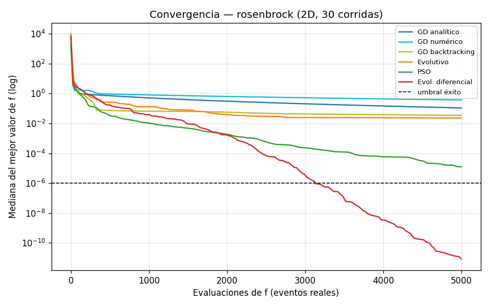
Figura 1. Convergencia en Rosenbrock 2D: mediana de 30 corridas frente a evaluaciones de $f$ (escala logarítmica).
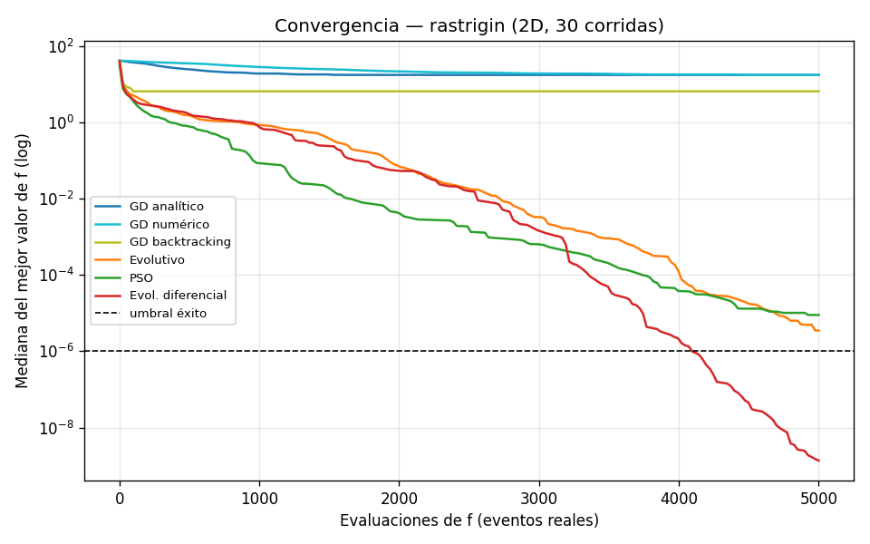
Figura 2. Convergencia en Rastrigin 2D: mediana de 30 corridas frente a evaluaciones de $f$.
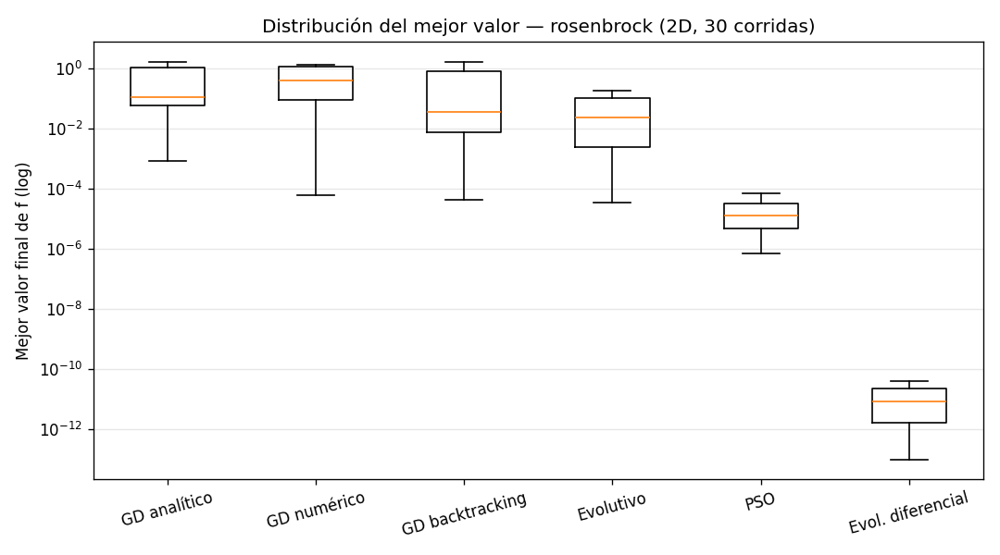
Figura 3. Distribución de $f_{\text{best}}$ por método en Rosenbrock 2D (30 corridas, escala logarítmica).
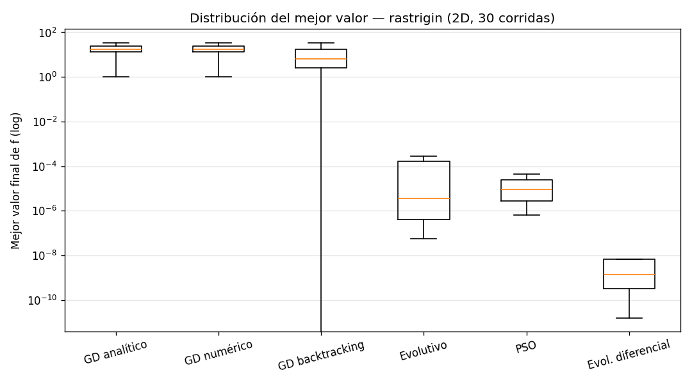
Figura 4. Distribución de $f_{\text{best}}$ por método en Rastrigin 2D (30 corridas).
Tabla 4: Rosenbrock 3D (30 corridas independientes, 5.000 evaluaciones de $f$)
| Método | Media | Desv. Est. | Mejor | Peor | Mediana | Tasa de Éxito ($f < 10^{-6}$) |
|---|---|---|---|---|---|---|
| GD analítico | 1.172 | 1.732 | 8.05e-03 | 5.668 | 0.194 | 0.0 % (0/30) |
| GD numérico | 1.817 | 1.765 | 6.19e-03 | 6.171 | 1.044 | 0.0 % (0/30) |
| GD backtracking | 0.655 | 1.614 | 3.41e-03 | 6.787 | 0.047 | 0.0 % (0/30) |
| Evolutivo | 0.791 | 1.191 | 8.33e-04 | 5.620 | 0.519 | 0.0 % (0/30) |
| PSO | 0.067 | 0.079 | 1.10e-04 | 0.282 | 0.034 | 0.0 % (0/30) |
| Evolución Diferencial | 3.21e-04 | 5.59e-04 | 8.13e-07 | 2.07e-03 | 7.79e-05 | 3.3 % (1/30) |
Tabla 5: Rastrigin 3D (30 corridas independientes, 5.000 evaluaciones de $f$)
| Método | Media | Desv. Est. | Mejor | Peor | Mediana | Tasa de Éxito ($f < 10^{-6}$) |
|---|---|---|---|---|---|---|
| GD analítico | 27.726 | 15.184 | 4.975 | 65.667 | 25.869 | 0.0 % (0/30) |
| GD numérico | 28.354 | 15.841 | 4.990 | 65.683 | 25.874 | 0.0 % (0/30) |
| GD backtracking | 18.473 | 13.969 | 0.995 | 65.666 | 15.422 | 0.0 % (0/30) |
| Algoritmo Evolutivo | 0.630 | 0.870 | 1.91e-07 | 2.985 | 4.03e-04 | 20.0 % (6/30) |
| PSO | 0.299 | 0.455 | 3.06e-05 | 1.300 | 8.10e-03 | 0.0 % (0/30) |
| Evolución Diferencial | 0.900 | 0.539 | 0.163 | 2.344 | 0.781 | 0.0 % (0/30) |
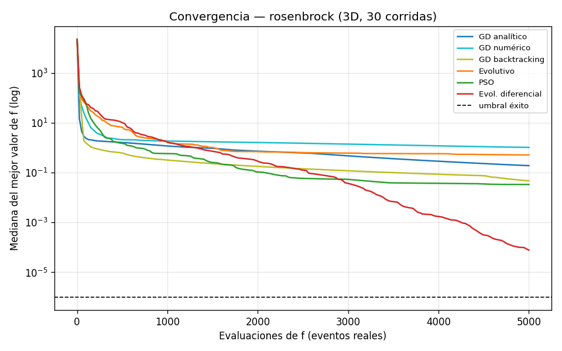
Figura 5. Convergencia en Rosenbrock 3D: mediana de 30 corridas frente a evaluaciones de $f$ (escala logarítmica).
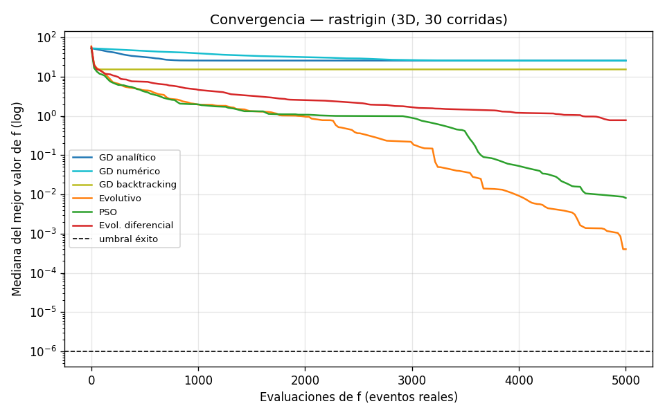
Figura 6. Convergencia en Rastrigin 3D: mediana de 30 corridas frente a evaluaciones de $f$ (escala logarítmica).
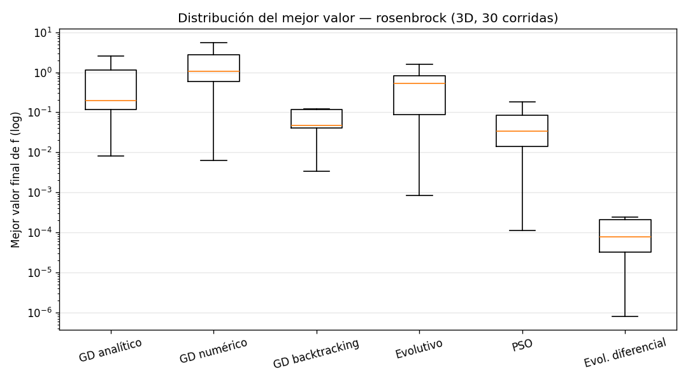
Figura 7. Distribución de $f_{\text{best}}$ por método en Rosenbrock 3D (30 corridas).
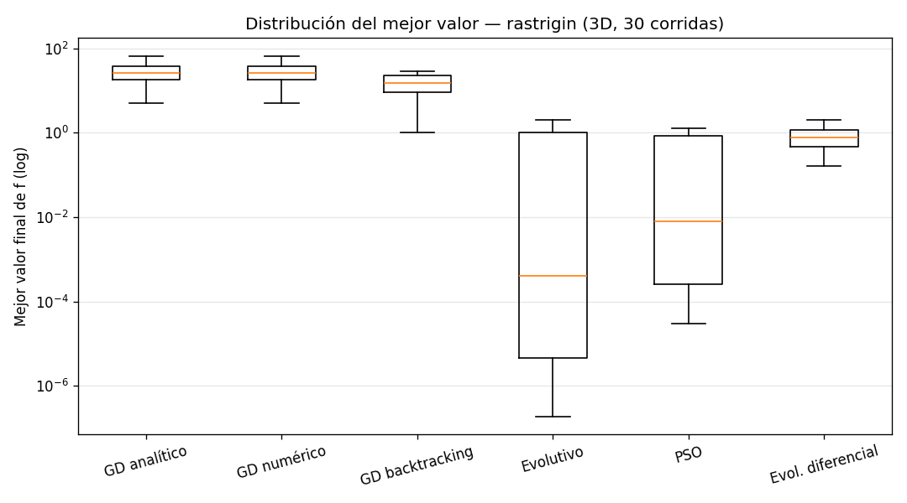
Figura 8. Distribución de $f_{\text{best}}$ por método en Rastrigin 3D (30 corridas).
Tabla 6: Evaluaciones y Costo Efectivo en 2D ($C = n_f + 4n_{\nabla f}$, mediana de 30 corridas)
| Función | Método | Eval. $f$ (mediana) | Eval. $\nabla f$ (mediana) | Costo Efectivo $C$ (mediana) | Costo Efectivo $C$ (máx.) |
|---|---|---|---|---|---|
| Rosenbrock 2D | GD analítico | 5000 | 5000 | 25.000 | 25.000 |
| Rosenbrock 2D | GD numérico | 5000 | 0 | 5.000 | 5.000 |
| Rosenbrock 2D | GD backtracking | 5000 | 486 | 6.946 | 7.188 |
| Rosenbrock 2D | Algoritmo Evolutivo | 5000 | 0 | 5.000 | 5.000 |
| Rosenbrock 2D | PSO | 5000 | 0 | 5.000 | 5.000 |
| Rosenbrock 2D | Evolución Diferencial | 5000 | 0 | 5.000 | 5.000 |
| Rastrigin 2D | GD analítico | 3178 | 3178 | 15.888 | 21.516 |
| Rastrigin 2D | GD numérico | 5000 | 0 | 5.000 | 5.000 |
| Rastrigin 2D | GD backtracking | 276 | 31 | 400 | 523 |
| Rastrigin 2D | Algoritmo Evolutivo | 5000 | 0 | 5.000 | 5.000 |
| Rastrigin 2D | PSO | 5000 | 0 | 5.000 | 5.000 |
| Rastrigin 2D | Evolución Diferencial | 5000 | 0 | 5.000 | 5.000 |
Tabla 7: Evaluaciones y Costo Efectivo en 3D ($C = n_f + 6n_{\nabla f}$, mediana de 30 corridas)
| Función | Método | Eval. $f$ (mediana) | Eval. $\nabla f$ (mediana) | Costo Efectivo $C$ (mediana) | Costo Efectivo $C$ (máx.) |
|---|---|---|---|---|---|
| Rosenbrock 3D | GD analítico | 5000 | 5000 | 35.000 | 35.000 |
| Rosenbrock 3D | GD numérico | 5000 | 0 | 5.000 | 5.000 |
| Rosenbrock 3D | GD backtracking | 5000 | 518 | 8.108 | 8.240 |
| Rosenbrock 3D | Algoritmo Evolutivo | 5000 | 0 | 5.000 | 5.000 |
| Rosenbrock 3D | PSO | 5000 | 0 | 5.000 | 5.000 |
| Rosenbrock 3D | Evolución Diferencial | 5000 | 0 | 5.000 | 5.000 |
| Rastrigin 3D | GD analítico | 3283 | 3282 | 22.975 | 30.122 |
| Rastrigin 3D | GD numérico | 5000 | 0 | 5.000 | 5.000 |
| Rastrigin 3D | GD backtracking | 275 | 31 | 461 | 524 |
| Rastrigin 3D | Algoritmo Evolutivo | 5000 | 0 | 5.000 | 5.000 |
| Rastrigin 3D | PSO | 5000 | 0 | 5.000 | 5.000 |
| Rastrigin 3D | Evolución Diferencial | 5000 | 0 | 5.000 | 5.000 |
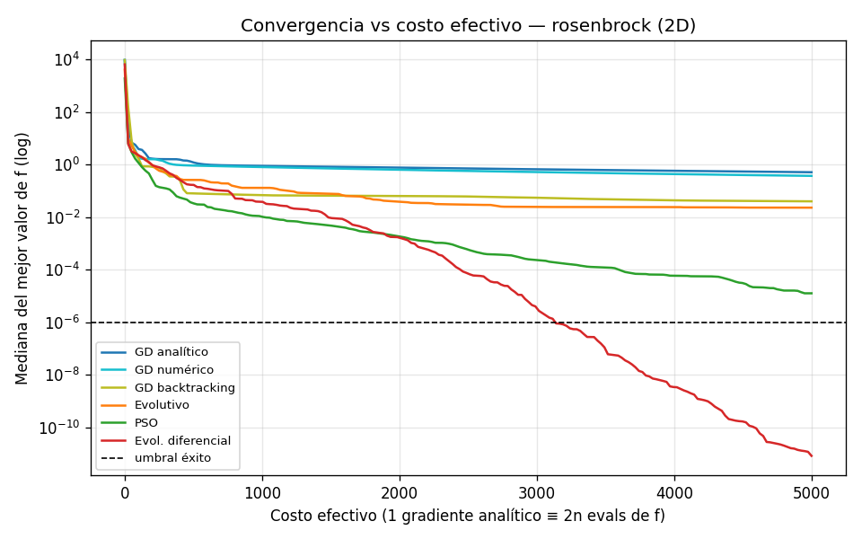
Figura 9. Convergencia en Rosenbrock 2D frente al Costo Efectivo $C = n_f + 4n_{\nabla f}$ (mediana de 30 corridas).
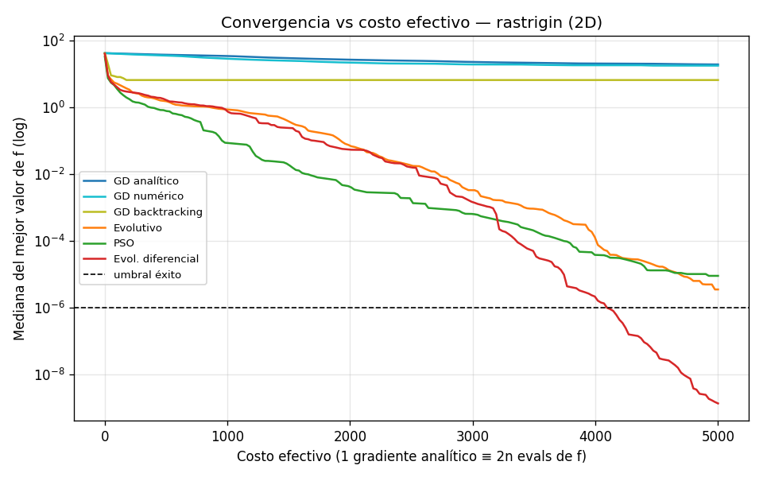
Figura 10. Convergencia en Rastrigin 2D frente al Costo Efectivo $C = n_f + 4n_{\nabla f}$ (mediana de 30 corridas).
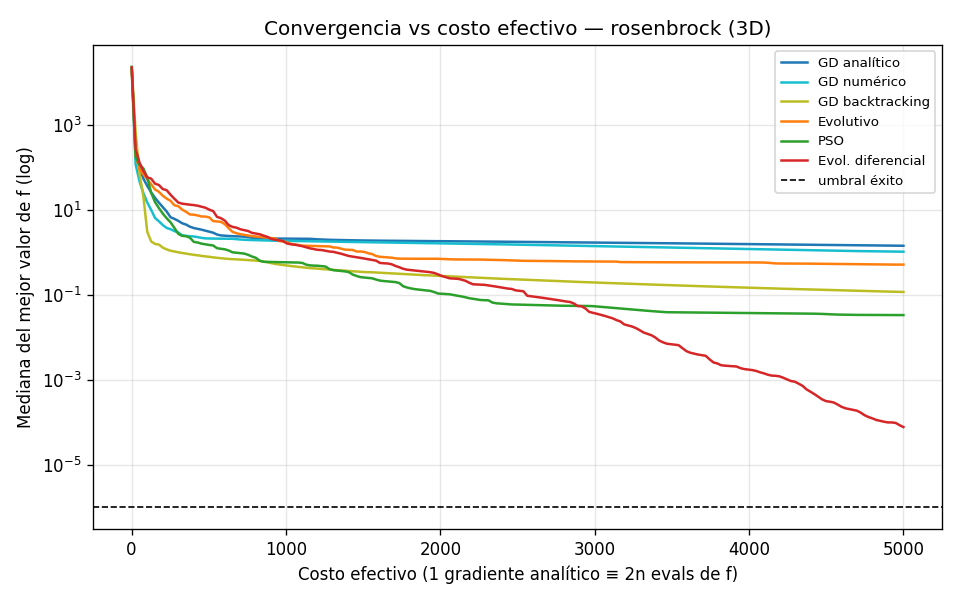
Figura 11. Convergencia en Rosenbrock 3D frente al Costo Efectivo $C = n_f + 6n_{\nabla f}$ (mediana de 30 corridas).
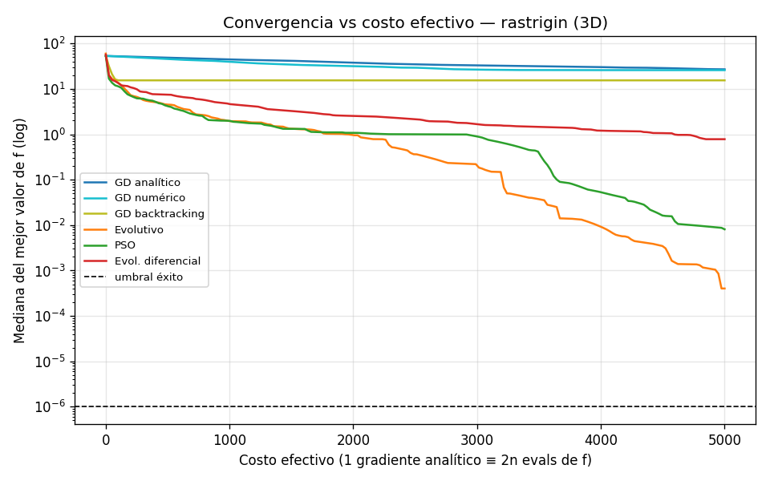
Figura 12. Convergencia en Rastrigin 3D frente al Costo Efectivo $C = n_f + 6n_{\nabla f}$ (mediana de 30 corridas).
1.5. Animaciones de Dinámica Poblacional en Rastrigin 2D
Comparación visual interactiva que demuestra la diferencia de comportamiento entre la búsqueda miope unidireccional por gradiente y la búsqueda colectiva con vectores de prueba de Evolución Diferencial:
Atrapado en Mínimo Local Cercano
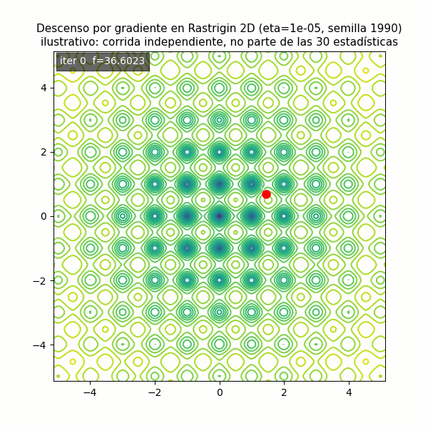
La trayectoria (401 iteraciones) desciende velozmente por la pendiente más pronunciada, pero su naturaleza puramente local le impide cruzar las barreras de potencial, quedando irremediablemente atrapada en un mínimo secundario.
Convergencia al Óptimo Global (0, 0)
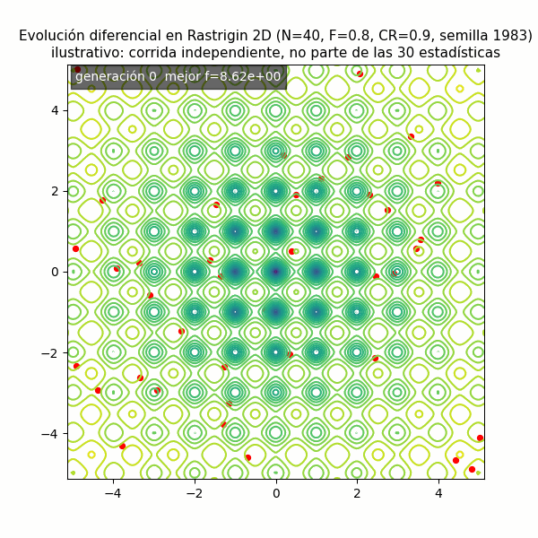
La población de 50 vectores (61 generaciones) explora múltiples cuencas concurrentemente. Las mutaciones dirigidas por diferencias poblacionales logran sortear los mínimos locales y colapsar con precisión extrema en el origen.
1.6. Discusión de Resultados y Síntesis Comparativa
Síntesis analítica sobre los compromisos entre métodos locales de primer orden y metaheurísticas poblacionales bioinspiradas:
¿Qué aportó el Descenso por Gradiente?
- Rapidez en cuencas convexas: Con backtracking en Rastrigin 2D converge en una mediana de solo $400$ de costo efectivo y alcanza $f=0$ exacto si parte en la cuenca adecuada.
- Miopía y atrapamiento: Incapaz de superar barreras de potencial; en Rastrigin se estanca en el mínimo local más próximo (0% de éxito con paso constante).
- Coste oculto de $\nabla f$: Bajo la equivalencia teórica $1\,\nabla f \equiv 2n\,f$, el GD analítico consume de 3 a 7 veces más esfuerzo equivalente que las metaheurísticas ($C$ hasta $35.000$).
¿Qué aportaron las Metaheurísticas?
- Exploración global robusta: La cooperación poblacional (cruces, mutaciones diferenciales y memoria de enjambre) permite saltar entre cuencas. DE logró 100% de éxito en Rosenbrock y Rastrigin 2D.
- Inmunidad al mal condicionamiento: En el estrecho valle de Rosenbrock ($\kappa \approx 2.500$), DE superó a los métodos de gradiente por hasta 10 órdenes de magnitud sin calcular derivadas.
- Costo predecible: Operan bajo un presupuesto fijo y transparente de evaluaciones ($n_f = 5.000, n_{\nabla f} = 0$).
Efecto del Paso de 2D a 3D
- Crecimiento combinatorio: En Rastrigin 3D surgen $\approx 1.331$ mínimos locales. Con 5.000 evaluaciones fijas, la tasa de éxito de DE cayó al 0%, evidenciando la necesidad de mayor presupuesto.
- Resiliencia del Evolutivo y PSO: El algoritmo evolutivo canónico retuvo un 20% de éxito (6/30) en Rastrigin 3D, y PSO alcanzó la mejor media ($0{,}299$).
- Rosenbrock 3D: DE mantuvo el liderazgo con media $3{,}21\times 10^{-4}$, confirmando que su operador de vector de prueba sigue guiando eficazmente la curvatura.
Propuesta de Enfoque Híbrido (Memético)
Los hallazgos demuestran que ambos paradigmas son complementarios:
Tabla 8: Síntesis Comparativa Cualitativa entre Familias
| Aspecto Evaluado | Descenso por Gradiente (Primer Orden) | Metaheurísticas Bioinspiradas (Poblacionales) |
|---|---|---|
| Precisión Final (2D) | Rosenbrock: mediana 0,03 a 0,37. Rastrigin: estancado en mínimos locales (medias 11 a 20). | DE: $10^{-8}$ a $10^{-10}$ (100% éxito); PSO $\approx 10^{-5}$; Evolutivo 0,07 a 0,17. |
| Precisión Final (3D) | Rosenbrock: medias 0,66 a 1,8. Rastrigin: medias 18 a 28 (0% éxito). | Rosenbrock: DE $3\times 10^{-4}$. Rastrigin: medias 0,3 a 0,9 y éxito $\le 20\%$. |
| Consumo de Evaluaciones | Rápido si converge en cuenca favorable, pero coste del gradiente escala a $2n\cdot n_{\nabla f}$. | Presupuesto fijo estricto (5.000), sin requerir cálculo de derivadas. |
| Geometría que Explota | Convexidad y gradiente local; sufre con mal condicionamiento y multi-modalidad. | Búsqueda estocástica poblacional; explora múltiples cuencas concurrentes sin derivadas. |
| Sensibilidad | Alta sensibilidad al punto inicial $x_0$ y a la tasa de aprendizaje $\eta$. | Sensible a hiperparámetros de control ($F, CR, w, c_1, c_2$) y tamaño de población $N$. |
Parte 2: Optimización Combinatoria — TSP España
Resolución del Problema del Viajero Asimétrico sobre las 47 capitales de provincia de la España peninsular mediante datos viales reales de OSRM, tarifas de peaje y costes salariales y de carburante.
2.1. Formulación del Problema del Viajero Asimétrico (ATSP)
Un agente comercial debe recorrer en automóvil las $N = 47$ capitales de provincia de la España peninsular y retornar a la ciudad de origen minimizando el costo logístico total. Una solución factible se modela como una permutación cíclica de ciudades $\pi = (\pi_1, \pi_2, \dots, \pi_N) \in \mathcal{S}_N$.
La función objetivo que cuantifica el costo total del circuito cerrado corresponde a:
$$\min_{\pi \in \mathcal{S}_N} \; f(\pi) = \sum_{k=1}^{N-1} C_{\pi_k,\pi_{k+1}} + C_{\pi_N,\pi_1}, \quad N = 47$$El costo de transición entre cualquier par interprovincial $(\pi_k, \pi_{k+1})$ desagrega linealmente el valor del tiempo de viaje, los peajes y el combustible:
$$C_{ij} = v_h \cdot T_{ij} + P_{ij} + F_{ij}$$donde $T_{ij}$ representa la duración temporal de conducción vial (h), $v_h$ el valor de la hora de trabajo del conductor (€/h), $P_{ij}$ las tarifas oficiales de peaje (€) y $F_{ij}$ el desembolso en combustible (€). En general, debido a sentidos viales, circunvalaciones y peajes unidireccionales, $C_{ij} \neq C_{ji}$ (TSP Asimétrico).
2.2. Adquisición de Datos Viales y Georreferenciación
Metodología de recolección, georreferenciación espacial y modelado de la red vial de carreteras:
1. Delimitación del Ámbito Territorial
Se delimita el estudio a las 47 capitales provinciales de la España peninsular. Se excluyeron deliberadamente los territorios insulares (Islas Baleares e Islas Canarias) y las plazas de Ceuta y Melilla para preservar la conexidad física y continua de la red vial terrestre, evitando discontinuidades que requerirían transporte multimodal marítimo o aéreo con estructuras tarifarias ajenas.
2. Geocodificación con OpenStreetMap
La adquisición de coordenadas geográficas espaciales (latitud y longitud en WGS84) se realizó mediante el servicio Nominatim de OpenStreetMap a través de geopy. Se implementó un control estricto de frecuencia con pausas de $\Delta t = 1{,}1$ s y un timeout preventivo de 10 s para evitar bloqueos por rate-limiting, consolidando el archivo coordenadas_capitales.csv.
3. Matriz Temporal y Vial (OSRM)
La duración de conducción y distancia se modeló con la API Table /table/v1/driving/ de OSRM sobre grafos con jerarquías de contracción. Procesó los $47 \times 47 = 2.209$ pares incorporando límites de velocidad por tipo de vía (autovías 120 km/h, convencionales 90 km/h, tramos urbanos 30-50 km/h) y penalizaciones por giros e intersecciones (2 a 5 s).
4. Velocidad Efectiva y Consumo del Fabricante
Las hojas de especificaciones de los fabricantes entregan el rendimiento de combustible para velocidades que no superen los 100 km/h. Aunque la ley permite 120 km/h, el análisis arrojó una media nacional de 85.35 km/h (mediana 87.36 km/h y máx. 96.84 km/h) por la penetración urbana (30-50 km/h). Al comprobarse que $V_{\text{efectiva}} < 100$ km/h, se valida técnicamente el uso de los valores oficiales de fábrica (4.7 L/100 km).
Grafos de Accesibilidad de la Red Vial Española
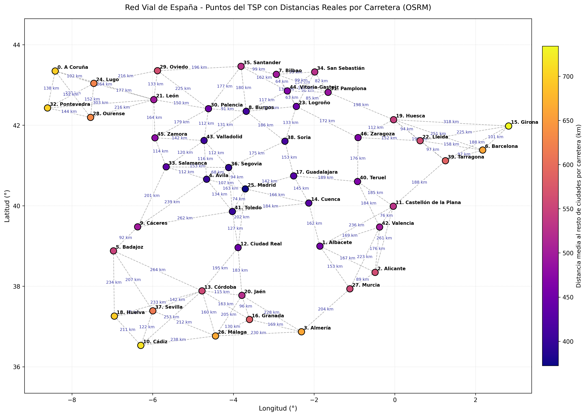
Figura 15. Grafo de accesibilidad vial interprovincial en kilómetros de carretera ($d_{carretera}$).
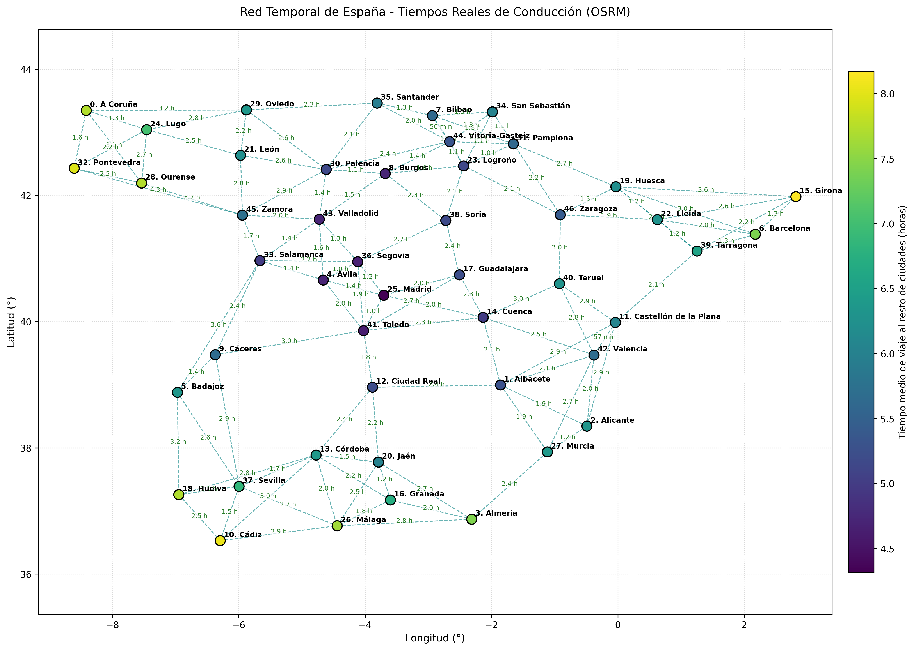
Figura 16. Grafo de accesibilidad temporal interprovincial en horas de conducción ($t_{carretera}$).
Tabla 9: Métricas Estadísticas de Velocidades Medias Efectivas en España
| Métrica Estadística | Valor Calculado | Interpretación Logística y Territorial |
|---|---|---|
| Velocidad Promedio Nacional | 85.35 km/h | Velocidad comercial puerta a puerta en desplazamientos interprovinciales. |
| Mediana | 87.36 km/h | El 50% de las conexiones viales del país superan los 87.36 km/h. |
| Desviación Estándar | 6.79 km/h | Refleja una notable homogeneidad y madurez en la red de gran capacidad. |
| Velocidad Mínima | 48.23 km/h | Teruel ↔ Guadalajara (orografía accidentada a través de vías convencionales). |
| Velocidad Máxima | 96.84 km/h | San Sebastián ↔ Girona (corredor continuo 100% autovía y autopista). |
2.3. Modelo de Costo Económico Total ($C_{total}$)
La función objetivo a nivel de circuito y su desagregación por tramo $(i,j)$ se formulan como:
$$\min_{\pi \in \mathcal{S}_N} \; f(\pi) = \sum_{k=1}^{N-1} C_{total}(\pi_k,\pi_{k+1}) + C_{total}(\pi_N,\pi_1)$$ $$C_{total}(i,j) = v_h \cdot T_{carretera}(i,j) + C_{combustible}(i,j) + C_{peajes}(i,j)$$La siguiente tabla desglosa cada componente financiero, su modelado y las fuentes oficiales gubernamentales y de fabricantes de donde se obtuvieron los parámetros:
| Componente del Costo | Modelado Financiero | Gasto Medio (€) | Participación (%) | Fuente y Referencia Oficial |
|---|---|---|---|---|
| Salario Conductor ($v_h$) | 8.90 €/hora (SMI bruto horario regulado + cotizaciones de Seguridad Social) | 55.27 € | 54.8 % | Real Decreto 145/2024, de 6 de febrero (BOE núm. 33, de 7 de febrero de 2024), por el que se fija el Salario Mínimo Interprofesional en España. |
| Combustible ($C_{comb}$) | Dacia Sandero TCe (4.7 L/100km a 1.787 €/L = 0.083989 €/km) | 45.29 € | 44.9 % | MITECO (2024): Geoportal de Gasolineras (estadísticas de carburantes) y Ficha Técnica Oficial Dacia/Renault (protocolo de emisiones WLTP mixto). |
| Peajes Activos ($C_{peaj}$) | Tarifa media 0.125 €/km en corredores con peaje activo (AP-7, AP-66, AP-68, etc.) | 0.30 € | 0.3 % | Ministerio de Transportes y Movilidad Sostenible (2024): Catálogo de la Red de Carreteras del Estado: Autopistas en régimen de concesión y tarifas aplicables. |
| COSTO TOTAL PROMEDIO | Suma lineal de los 3 rubros | 100.86 € | 100.0 % | Modelo Logístico Integral: Agregación aditiva validada para el transporte terrestre interprovincial en España. |
2.4. Colonia de Hormigas (Ant Colony Optimization - ACO)
Fundamentación Matemática del Algoritmo de Colonia de Hormigas
Inspirado en la conducta de forrajeo colectivo real mediante estigmergia química, una población de $m$ hormigas artificiales construye concurrentemente soluciones cerradas al ATSP. La probabilidad de que la hormiga $k$, ubicada en la capital $i$, seleccione la ciudad $j$ dentro del conjunto factible no visitado $\mathcal{N}_i^k$ sigue la regla de transición estocástica:
$$p_{ij}^k = \frac{[\tau_{ij}]^{\alpha} \cdot [\eta_{ij}]^{\beta}}{\sum_{l \in \mathcal{N}_i^k} [\tau_{il}]^{\alpha} \cdot [\eta_{il}]^{\beta}}, \quad \forall j \in \mathcal{N}_i^k$$donde $\tau_{ij}$ representa la memoria colectiva acumulada de feromonas, y $\eta_{ij} = 1 / C_{total}(i,j)$ es la visibilidad heurística económica (inverso multiplicativo del costo financiero total en euros). El compromiso entre explotación y exploración se gobierna mediante la regla pseudo-aleatoria proporcional (Ant Colony System - ACS) con parámetro $q_0 \in [0,1]$:
$$j = \begin{cases} \arg\max_{l \in \mathcal{N}_i^k} \{[\tau_{il}]^{\alpha} \cdot [\eta_{il}]^{\beta}\}, & \text{si } q \le q_0 \\ J \sim p_{ij}^k, & \text{si } q > q_0 \end{cases}$$Al culminar cada generación, las feromonas se evaporan a tasa $\rho \in (0,1]$ para evitar el estancamiento prematuro ($\tau_{ij} \leftarrow (1-\rho)\tau_{ij}$), y se refuerza de forma elitista (*Global-Best*) la mejor gira histórica descubierta con un aporte de $Q / L_{mejor}$. Se implementó además una parada temprana (*early stopping*) de 20 iteraciones consecutivas sin mejora para optimizar los ciclos de CPU.
Créditos de Implementación y Arquitectura del Pipeline
AntColonyOptimizer fue integrado y tomado del repositorio de código abierto desarrollado por John Berroa en GitHub (john-berroa/Ant-Colony-Optimization). En este trabajo no se programa el solver de hormigas básico desde cero, sino que el equipo diseñó la formulación matemática del problema de transporte, el procesamiento geoespacial real, el cálculo de las matrices de costo asimétricas, la instrumentación de monitoreo generacional y el diseño experimental de sensibilidad.
P_viajero_coordenadas.ipynb
Consulta las APIs de Nominatim (OSM) y Table (OSRM) para geolocalizar las 47 capitales y calcular los 2.209 pares viales. Modela salarios, peajes y combustible, exportando la matriz consolidada matriz_costo_total_euros.csv a Resultados_CSV_ANT/.
ANT_ALGORIMT.ipynb
Ingesta la matriz en un arreglo NumPy np.ndarray de $47 \times 47$. Ejecuta la clase extendida AntColonyOptimizerConHistorial, registrando cada iteración en rutas_por_generacion_aco.csv para la visualización del desenredo y análisis de convergencia.
Diseño Experimental de Sensibilidad (Tres Escenarios de ACO)
Caso Base (Equilibrado)
Parametrización estándar de compromiso con 30 hormigas, evaporación moderada $\rho = 0.10$ (10%), intensificación $Q = 2.0$, $\alpha = 1.0$, heurística $\beta = 2.0$ y $q_0 = 0.10$ (10% voraz determinista).
Caso Voraz (Miope)
Comportamiento altamente explotador con 20 hormigas, evaporación rápida $\rho = 0.20$ (20%), intensificación $Q = 3.0$, $\alpha = 1.5$, heurística agresiva $\beta = 4.5$ y $q_0 = 0.25$ (25% voraz determinista).
Caso Explorador (Óptimo)
Fomenta la diversidad poblacional con 50 hormigas, evaporación suave $\rho = 0.05$ (5%), intensificación $Q = 1.5$, $\alpha = 1.0$, $\beta = 2.5$ y $q_0 = 0.05$ (95% estocástico por ruleta).
Tabla 12: Configuración de Hiperparámetros para los Escenarios de ACO
| Hiperparámetro / Variable | Caso Base | Caso Voraz | Caso Explorador |
|---|---|---|---|
| Número de Hormigas ($m$) | 30 | 20 | 50 |
| Tasa de Evaporación ($\rho$) | 0.10 (10%) | 0.20 (20%, rápida) | 0.05 (5%, lenta) |
| Constante de Intensificación ($Q$) | 2.0 | 3.0 | 1.5 |
| Sensibilidad a la Feromona ($\alpha$) | 1.0 | 1.5 | 1.0 |
| Sensibilidad Heurística ($\beta$) | 2.0 (equilibrado) | 4.5 (muy voraz) | 2.5 (moderado) |
| Selección Voraz (`choose_best` $q_0$) | 0.10 (10% voraz) | 0.25 (25% voraz) | 0.05 (95% estocástico) |
| Criterio de Parada Temprana | 20 iter. sin mejora | 20 iter. sin mejora | 20 iter. sin mejora |
Resultados Comparativos de Desempeño
| Métrica de Desempeño | Caso Base (Equilibrado) | Caso Voraz (Miope) | Caso Explorador (Óptimo) |
|---|---|---|---|
| Mejor Costo Económico Total | 1.474,63 € | 1.489,88 € | 1.421,54 € |
| Tiempo de Conducción | 843.43 € (57.2%) | 853.48 € (57.3%) | 813.10 € (57.2%) |
| Gasto en Combustible | 594.17 € (40.3%) | 599.37 € (40.2%) | 571.41 € (40.2%) |
| Peajes en Autopistas | 37.03 € (2.5%) | 37.03 € (2.5%) | 37.03 € (2.6%) |
| Evaluación Cualitativa | Atrapado en mínimo local prematuro. | Atrapado por miopía heurística temprana ($\beta=4{,}5$). | Desenredo total del grafo y mejor balance global. |
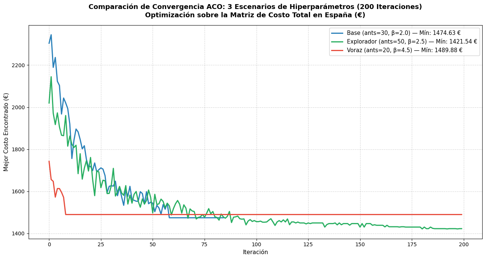
Figura 18. Curvas comparativas de convergencia para los tres perfiles operacionales de ACO.
Recorrido Cerrado Óptimo sobre la Red Vial Peninsular (Animación Paso a Paso)
Visualización animada de la solución encontrada por la colonia de hormigas en el Perfil Explorador ($\alpha=1{,}0, \beta=2{,}0, \rho=0{,}10$). Este perfil logró el mínimo costo logístico global garantizando una topología suave, continua y sin autointersecciones viales a través de las 47 capitales peninsulares.
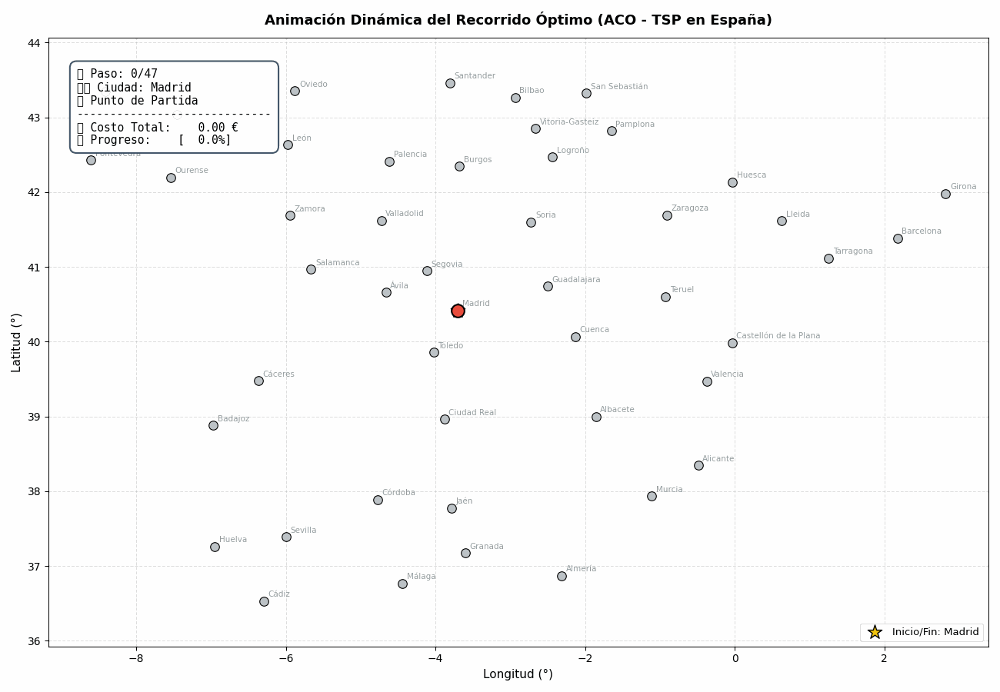
Figura 19. Animación secuencial del circuito cerrado óptimo del Caso Explorador (Costo total: 1.421,54 € | Conducción: 813,10 € | Combustible: 571,41 € | Peajes: 37,03 €).
Comparación Topológica con Escenarios Subóptimos
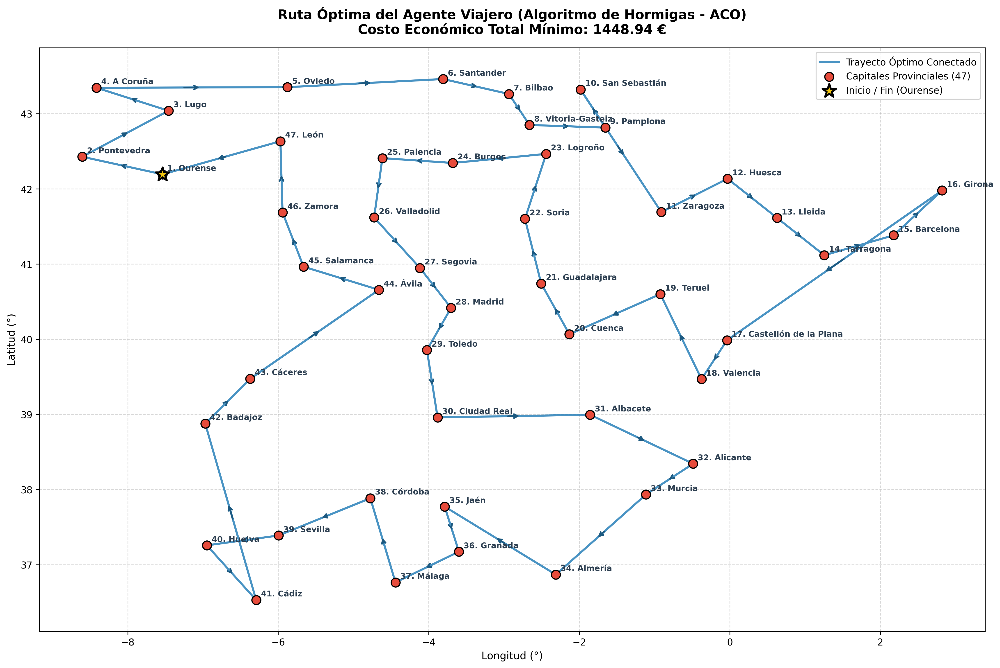
Caso Base (1.474,63 €): Parámetros equilibrados ($\beta=1{,}0$) con estancamiento prematuro en enlaces septentrionales.
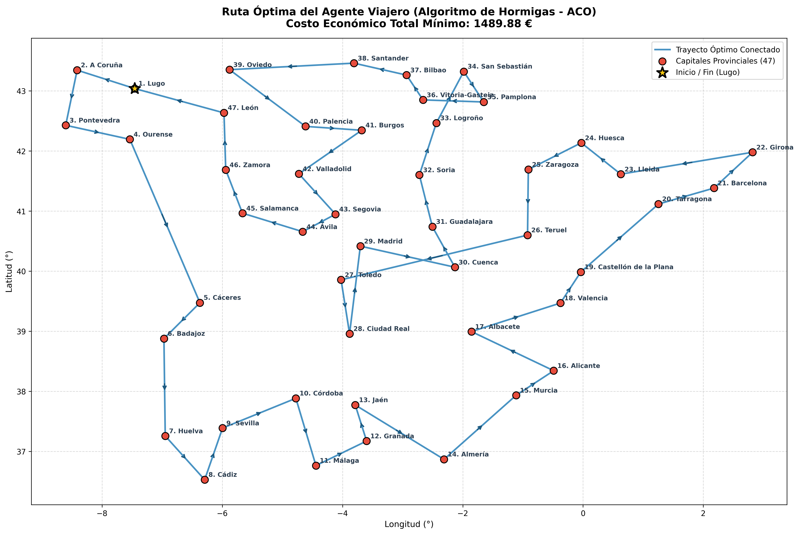
Caso Voraz (1.489,88 €): Exceso heurístico ($\beta=4{,}5$) que provocó miopía codiciosa y cruces en la meseta central.
2.5. Algoritmos Genéticos para Optimización Combinatoria (ATSP)
2.5.1. Fundamentación y Definición de los Algoritmos Genéticos Usados
Los Algoritmos Genéticos (AG) (Goldberg, 1989) son metaheurísticas de búsqueda estocástica inspiradas en los mecanismos de la selección natural y la genética biológica. En el ámbito de la optimización combinatoria y en particular del Problema del Agente Viajero Asimétrico (ATSP), un AG evoluciona una población heterogénea de soluciones candidatas (cromosomas) a lo largo de ciclos sucesivos (generaciones) mediante presiones de aptitud (fitness), recombinación genética (crossover) y perturbaciones aleatorias (mutation).
Algoritmo Generacional
Esquema síncrono donde la población completa de $M=200$ individuos se sustituye en cada ciclo generacional mediante hijos nuevos y preservación estricta de una élite ($e=2$).
Permutaciones Directas
Cada individuo es una biyección $\pi \in S_{47}$, garantizando de manera intrínseca que cada capital peninsular sea visitada exactamente una vez sin incurrir en soluciones nulas o infactibles.
Costo Económico Asimétrico
Optimización sobre la función $C_{total}(i,j)$, integrando tiempo de conducción laboral, combustible empírico WLTP y tarifas de peaje con asimetría vectorial orientada.
2.5.2. Especificación Detallada de los Operadores Genéticos
El diseño del algoritmo, codificado en el script Parte_2/algoritmo_genetico.py, interactúa directamente con el módulo común Parte_2/costos.py, garantizando que el AG y la Colonia de Hormigas optimicen exactamente la misma función objetivo sobre la red de 47 capitales peninsulares.
Codificación por Permutaciones Directas y Modelo Asimétrico de Red
Cada individuo se codifica como un vector de permutación $\pi = (\pi_1, \pi_2, \dots, \pi_N)$ con $N = 47$. El circuito es cerrado, imponiendo que tras la última ciudad visitada se retorna al origen ($\pi_{N+1} \equiv \pi_1$). La función objetivo minimiza el costo generalizado acumulado del ciclo:
$$f(\pi) = \sum_{k=1}^{N} C\big(\pi_k, \, \pi_{k+1}\big), \quad \text{con } \pi_{N+1} \equiv \pi_1$$Donde $C(i,j)$ es la matriz asimétrica de costo total que integra horas de conducción laboral ($v_h = 8{,}90$ €/h), consumo empírico de carburante según el perfil comercial de la red (85,35 km/h) y tarifas oficiales de peaje.
Selección por Torneo ($k = 3$)
La población inicial consta de $M = 200$ permutaciones uniformes. Cada progenitor se selecciona por torneo: se extraen $k = 3$ individuos al azar con reemplazo y gana el de menor costo:
$$P(r) = \left(\frac{M - r + 1}{M}\right)^k - \left(\frac{M - r}{M}\right)^k$$El mejor individuo ($r=1$) gana con $P(1) \approx 1{,}5\%$, y el peor con $\approx 10^{-7}$, manteniendo equilibrio entre presión selectiva y diversidad.
Cruce de Orden (OX, Davis 1985)
Con probabilidad $p_c = 0{,}90$ los progenitores se cruzan mediante el operador OX:
- Copia el subsegmento $[a, b]$ del Padre 1.
- Completa las posiciones restantes de forma circular desde $b+1$ respetando el orden del Padre 2.
Garantiza permutaciones válidas y preserva el orden relativo y la orientación de viaje en grafos asimétricos.
Mutación por Inversión de Segmento
Con probabilidad $p_m = 0{,}30$ se invierte el orden del subsegmento comprendido entre dos posiciones aleatorias $i < j$.
Al ser asimétrico, la inversión de aristas internas altera el costo unidireccional:
$$\Delta_{\text{real}} = \Delta_{\text{2-opt}} + \sum_{k=i}^{j-1} \big(C_{\pi_{k+1},\pi_k} - C_{\pi_k,\pi_{k+1}}\big)$$Por esto, el costo se recalcula completo para evitar sesgos de simetría.
| Tabla 14. Ejemplo Didáctico del Cruce de Orden (OX) con $N = 8$, segmento $a = 2$ y $b = 4$ (índices 0..7) | ||||||||
|---|---|---|---|---|---|---|---|---|
| Individuo | Pos 0 | Pos 1 | Pos 2 (a) | Pos 3 | Pos 4 (b) | Pos 5 | Pos 6 | Pos 7 |
| Padre 1 | 0 | 1 | 2 | 3 | 4 | 5 | 6 | 7 |
| Padre 2 | 4 | 7 | 1 | 0 | 6 | 2 | 5 | 3 |
| Hijo (OX) | 0 | 6 | 2 | 3 | 4 | 5 | 7 | 1 |
Reemplazo Generacional, Criterio de Parada y Conteo Estricto de Evaluaciones
El esquema es generacional con elitismo estricto: los $e = 2$ mejores individuos se transfieren inalterados a la siguiente generación, mientras que los $M - e = 198$ restantes se sustituyen por descendientes nuevos. El criterio de parada se fijó en $G = 1.500$ generaciones continuas. El número total exacto de evaluaciones de la función objetivo ($n_{\text{eval}}$) es:
$$n_{\text{eval}} = M + G \cdot (M - e) = 200 + 1500 \times 198 = 297\,200 \text{ evaluaciones}$$Gracias a la vectorización matricial con NumPy, una corrida completa de 297.200 evaluaciones se ejecuta en apenas 13,8 segundos en CPU convencional.
| Parámetro Operacional | Símbolo | Valor Seleccionado | Opción en Línea de Comandos (CLI) |
|---|---|---|---|
| Tamaño de la Población | $M$ | 200 individuos | --tam-poblacion |
| Generaciones de Búsqueda | $G$ | 1.500 ciclos | --generaciones |
| Probabilidad de Cruce | $p_c$ | 0,90 (90%) | --prob-cruce |
| Probabilidad de Mutación | $p_m$ | 0,30 (30%) | --prob-mutacion |
| Operador de Mutación | - | Inversión de segmento | --tipo-mutacion inversion |
| Tamaño de Torneo | $k$ | 3 individuos | --tam-torneo |
| Individuos Élite | $e$ | 2 élites | --elitismo |
| Valor de la Hora de Conducción | $v_h$ | 8,90 €/h | --valor-hora |
| Semilla Base Pseudoaleatoria | $s$ | 1983 | --semilla |
2.5.3. Reproducibilidad Científica y Arquitectura de Visualización
Para garantizar la reproducibilidad exacta en cualquier entorno y desvincular el costo de cómputo del renderizado gráfico, se implementó un pipeline modular y desacoplado:
Control Estricto de Semillas
Los hiperparámetros se leen de config_tsp.json y se sobreescriben por consola vía argparse. Cada corrida $r$ inicializa el generador moderno numpy.random.default_rng(1983 + r) (Harris et al., 2020), asegurando resultados reproducibles bit a bit.
Artefactos en resultados/ga/
Cada ejecución exporta de manera estructurada: resumen.json (métricas y mejor ruta), mejor_ruta.csv (desglose tramo a tramo), historial.csv (curva de convergencia) y rutas_por_generacion.csv.
Visualización con gif_ruta.py
El script gráfico no ejecuta el AG; lee las rutas históricas y proyecta sobre la cartografía vectorial peninsula_iberica.geojson usando las coordenadas fijadas en coordenadas_capitales.csv para operar sin requerir conexión a internet.
2.5.4. Resultados de la Optimización por Algoritmo Genético
Con la semilla base 1983 y los parámetros fijados, el algoritmo genético convergió en una ruta óptima de 1.421,04 € tras 297.200 evaluaciones y 13,8 segundos de cómputo en CPU:
Diferencia de apenas 0,50 € frente a la mejor solución hallada por la Colonia de Hormigas (1.421,54 €), confirmando la robustez cruzada de ambas metaheurísticas bioinspiradas.
| Rubro Logístico | Magnitud Física | Costo (€) | % |
|---|---|---|---|
| Tiempo de Conducción | 91,36 h a 8,90 €/h | 813,10 € | 57,2 % |
| Gasto en Combustible | 6.797,72 km (WLTP) | 570,91 € | 40,2 % |
| Peajes de Autopista | 4 tramos concesionados | 37,03 € | 2,6 % |
| Total Itinerario Peninsular | 47 capitales cerradas | 1.421,04 € | 100,0 % |
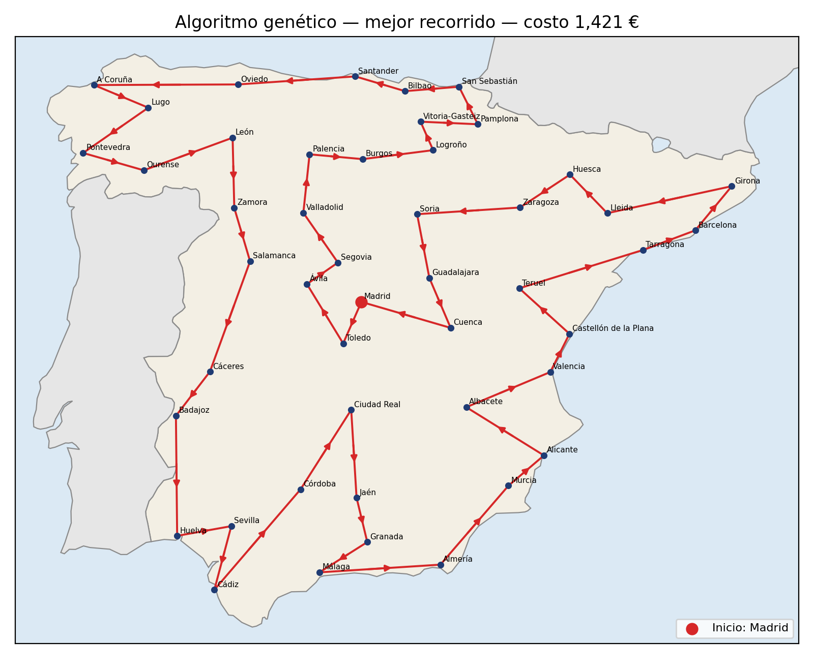
Figura 21. Mejor circuito cerrado encontrado por el Algoritmo Genético sobre la península ibérica (1.421,04 €). Parte de Madrid hacia el norte, rodea la cornisa cantábrica, desciende por la frontera lusa y el litoral mediterráneo, retornando por la meseta oriental sin cruces topológicos.
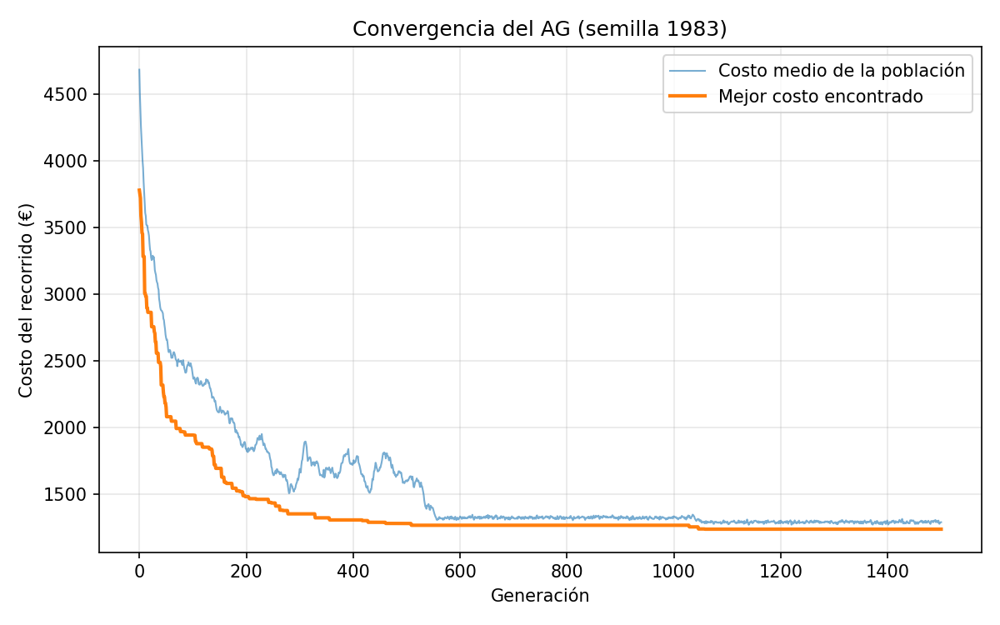
Figura 20. Curva de aprendizaje del Algoritmo Genético: mejor costo histórico vs. media poblacional a través de las 1.500 generaciones.
| Generación | Evaluaciones | Mejor Costo (€) | Media Poblacional (€) |
|---|---|---|---|
| 0 (Inicial) | 200 | 3.846,45 € | 4.710,61 € |
| 50 | 10.100 | 2.208,68 € | 2.581,40 € |
| 100 | 20.000 | 1.975,08 € | 2.421,47 € |
| 250 | 49.700 | 1.609,82 € | 2.011,12 € |
| 500 | 99.200 | 1.426,98 € | 1.590,40 € |
| 1.000 | 198.200 | 1.421,35 € | 1.504,21 € |
| 1.500 (Final) | 297.200 | 1.421,04 € | 1.499,69 € |
💡 Dinámica de Aprendizaje: El algoritmo logró una reducción total del 63% respecto a la población aleatoria inicial. El 90% de la optimización se logró en la generación 209 y el 99% en la generación 477, preservando una variabilidad poblacional residual del 5,5% que evitó la pérdida de diversidad.
2.6. Comparación Visual Dinámica: Colonia de Hormigas vs. Algoritmo Genético
Comparativa directa de la evolución del recorrido sobre la red vial peninsular de las 47 capitales de provincia. Ambas metaheurísticas bioinspiradas optimizan de manera independiente la misma función de costo económico generalizado ($C_{total}$), convergiendo hacia soluciones periféricas prácticamente indistinguibles con una brecha de apenas 0,50 € (0,035%), lo que demuestra empíricamente la cercanía al óptimo global del problema:
Evolución por Enjambre y Estigmergia (Caso Explorador)
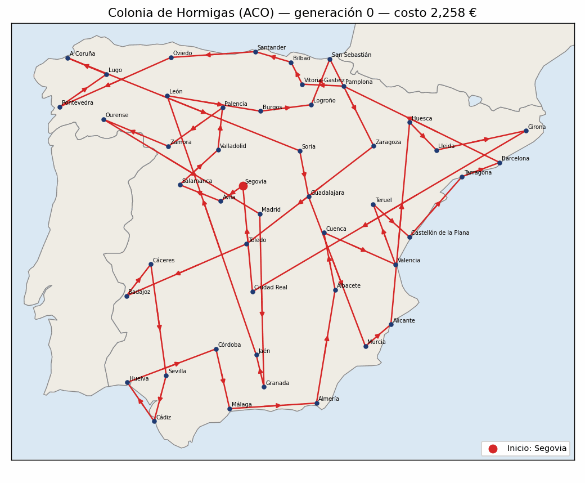
Figura 22. Animación de desenredo generacional de la Colonia de Hormigas. El enjambre elimina progresivamente las aristas cruzadas en el interior de la meseta hasta estabilizar el circuito continuo de 1.421,54 €.
Evolución por Recombinación OX y Mutación por Inversión
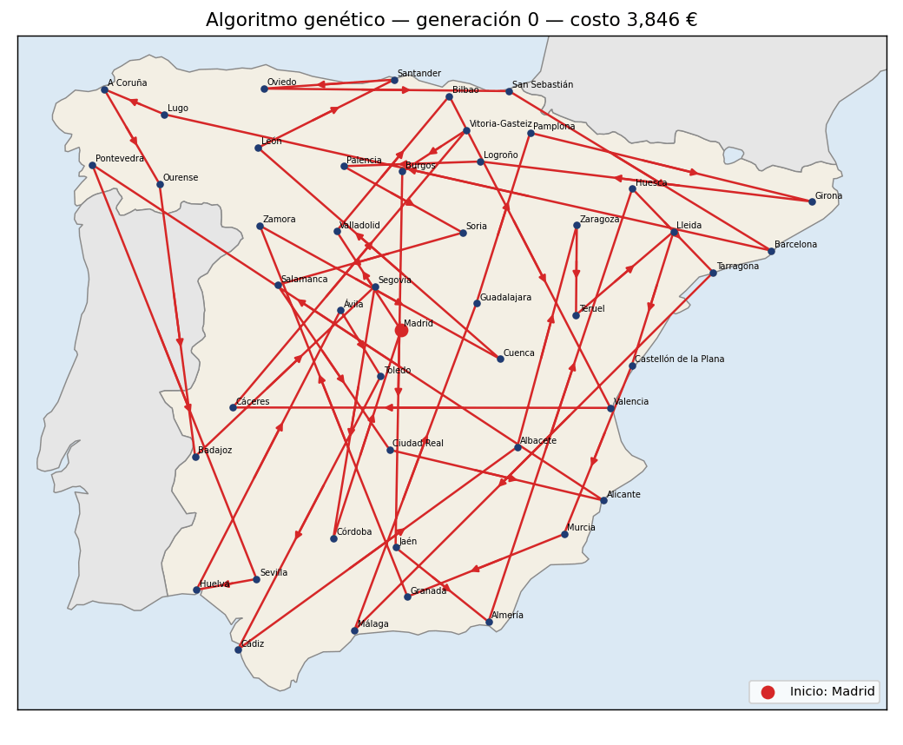
Figura 23. Animación de convergencia del Algoritmo Genético a lo largo de 1.500 generaciones. Ilustra cómo el cruce OX y la mutación 2-opt invierten enlaces ineficientes hasta alcanzar la solución óptima de 1.421,04 €.
Conclusiones de la Parte 2: Optimización Combinatoria del Viajero (ATSP)
Equivalencia Práctica entre Metaheurísticas
La Colonia de Hormigas (escenario Explorador) obtuvo 1.421,54 € y el Algoritmo Genético 1.421,04 €, una diferencia ínfima de apenas 0,50 € ($\approx 0{,}04\%$). Esta brecha confirma que ambas familias bioinspiradas convergieron al mismo óptimo global efectivo, sin que la discrepancia baste para declarar un ganador absoluto al provenir de una corrida individual.
Impacto Decisivo de los Hiperparámetros en ACO
El escenario Explorador (50 hormigas, $\rho = 0{,}05$, $q_0 = 0{,}05$) superó al Base en un 3,73% y al Voraz en un 4,81%. El perfil Voraz convergió rápidamente pero quedó atrapado en mínimos locales por su sesgo codicioso ($\beta = 4{,}5$). Dicha exploración estocástica implicó un mayor costo temporal: 18,1 s frente a 4,7 s y 6,3 s.
Rápida Convergencia y Diversidad en el AG
El 99% de la mejora total del Algoritmo Genético se logró tempranamente en la generación 477 de las 1.500 programadas. Al finalizar, la población retuvo una diversidad media del 5,5% sobre el mejor individuo sin colapsar. El operador de Cruce de Orden (OX) fue esencial para preservar el sentido vectorial asimétrico de los enlaces.
Dominancia del Tiempo Laboral del Conductor
En la estructura de costos de la mejor ruta, el salario del conductor representa el 57,2% del total, mientras que el combustible aporta el 40,2% y los peajes solo el 2,6%. Como consecuencia directa, el modelo bioinspirado favorece de forma sistemática rutas con menor tiempo de conducción sobre aquellas físicamente más cortas pero con velocidades promedio inferiores.
Calidad Topológica y Desenredo de Circuitos
Tanto el escenario Explorador de ACO como el Algoritmo Genético alcanzaron circuitos cerrados limpios y coherentes sin cruces topológicos entre tramos, bordeando ordenadamente la geografía peninsular. Por el contrario, el escenario Voraz conservó aristas cruzadas en el centro peninsular, evidenciando geométricamente el estancamiento en un mínimo local subóptimo.
Contribuciones de la IA y Cacería de Alucinaciones
Transparencia metodológica en el uso de Modelos de Lenguaje Grande (LLMs) y detección analítica de una alucinación conceptual en operadores de búsqueda local.
3.1. Prompts Principales y Supervisión Humana
Registro transparente de las consultas clave realizadas a modelos de lenguaje (LLMs) para el desarrollo del proyecto, evidenciando el rol de la IA como acelerador de implementación y la validación matemática humana requerida en cada fase:
"Implementa los operadores de un algoritmo genético para el TSP con representación por permutaciones: selección por torneo, cruce de orden y mutación por inversión..."
Impacto: Aceleró la implementación modular de algoritmo_genetico.py. El equipo auditó e integró la matriz asimétrica $C_{total}$ y la contabilidad estricta de evaluaciones.
"Guarda la mejor ruta de cada generación para generar después, en un script aparte, un GIF de su evolución sobre el mapa, con el sentido del recorrido y los nombres..."
Impacto: Permitió desacoplar la ejecución algorítmica pesada respecto a la renderización cartográfica vectorial en gif_ruta.py.
"¿Cómo puedo geolocalizar y descargar en local las coordenadas geográficas exactas y las distancias reales de conducción entre las capitales de provincia de España para usarlas en un optimizador de colonia de hormigas?"
Impacto: Estructuró el pipeline de extracción en P_viajero_coordenadas.ipynb usando OpenStreetMap Nominatim con rate-limiting ($\Delta t = 1{,}1$ s) y la API OSRM. Permitió persistir coordenadas_capitales.csv y las matrices viales en disco para ejecutar ACO de forma 100% offline y reproducible.
"Explícame la diferencia conceptual y operativa entre la matriz de ubicaciones geográficas de las capitales y la matriz de 47×47 que debe optimizar el algoritmo de colonia de hormigas."
Impacto: Clarificó la distinción entre el espacio cartográfico de visualización ($47 \times 2$ con pares latitud-longitud WGS84) y el espacio topológico de optimización ($47 \times 47$, matriz de adyacencia con costo económico total $C_{ij} = v_h \cdot T_{ij} + P_{ij} + F_{ij}$), la cual define la visibilidad heurística $\eta_{ij}$ y la deposición de feromonas $\tau_{ij}$.
3.2. Cacería de la Alucinación: La Mutación por Inversión NO equivale a 2-Opt en Redes Asimétricas
Afirmación errónea generada por el asistente de IA:
# En algoritmo_genetico.py (línea 20): "invierte el segmento r[i..j] (equivale a un movimiento 2-opt)"
¿Por qué es una Alucinación Matemática y Conceptual?
El movimiento clásico 2-opt (Croes, 1958) solo evalúa la reconexión de las 2 aristas de los extremos en tiempo $O(1)$ bajo la asunción implícita de que los costos son simétricos ($C_{uv} = C_{vu}$).
Sin embargo, en nuestro problema real de transporte carretero, la red vial es un TSP Asimétrico ($C_{ij} \neq C_{ji}$). Al invertir el orden del segmento, todas las aristas internas se recorren en sentido opuesto, por lo que el cambio real de costo es:
$$\Delta_{\text{real}} = \Delta_{2\text{-opt}} + \sum_{k=i}^{j-1} \left( C_{\pi_{k+1},\pi_k} - C_{\pi_k,\pi_{k+1}} \right)$$El sumatorio solo se anula en grafos no dirigidos. Por ende, la mutación por inversión no equivale operativamente a un 2-opt. No hubo impacto negativo en las cifras numéricas del proyecto porque el código siempre recalculaba el recorrido completo $f(\pi)$, pero se corrigió la fundamentación teórica.
Videos de Sustentación y Recursos
Grabaciones de sustentación audiovisual individual y fuentes bibliográficas oficiales del proyecto.
4.1. Sustentaciones Individuales del Equipo
Cada integrante detalla sus aportes técnicos específicos, análisis algorítmico y conclusiones del informe en su respectiva grabación:
Gian Carlo Mier
Sustentación de resultados, modelos bioinspirados y análisis combinatorio.
Ver GrabaciónJuan Jose Sanchez
Sustentación de recolección vial OSRM, peajes y Algoritmos Genéticos.
Ver GrabaciónNestor Enrique Mendoza
Sustentación de optimización numérica, costo efectivo y colonia de hormigas.
Ver Grabación4.2. Referencias Bibliográficas
- • Ballou, R. H., Rahbar, H., & Amini, M. M. (2002). Development of actual highway distances from network data. Transportation Research Part E: Logistics and Transportation Review, 38(4), 267–281. https://doi.org/10.1016/S1366-5545(02)00008-8
- • Dacia España. (2024). Ficha técnica: Dacia Sandero TCe (Protocolo WLTP). Renault Group. https://www.dacia.es/
- • Haklay, M., & Weber, P. (2008). OpenStreetMap: User-generated street maps. IEEE Pervasive Computing, 7(4), 12–18. https://doi.org/10.1109/MPRV.2008.80
- • Luxen, D., & Vetter, C. (2011). Real-time routing with Open Source Routing Machine. En Proceedings of the 19th ACM SIGSPATIAL International Conference on Advances in Geographic Information Systems (GIS '11) (pp. 513–516). Association for Computing Machinery. https://doi.org/10.1145/2093973.2094062
- • Miller, C. E., Tucker, A. W., & Zemlin, R. A. (1960). Integer programming formulation of traveling salesman problems. Journal of the ACM, 7(4), 326–329. https://doi.org/10.1145/321043.321046
- • Ministerio de Transportes y Movilidad Sostenible. (2024). Catálogo de la Red de Carreteras del Estado: Autopistas en régimen de concesión y tarifas aplicables. Gobierno de España. https://www.transportes.gob.es/
- • Ministerio para la Transición Ecológica y el Reto Demográfico. (s. f.). Geoportal de gasolineras: Estadísticas y precios de carburantes en España. Gobierno de España. Recuperado de https://geoportalgasolineras.es/
- • Real Decreto 145/2024, de 6 de febrero, por el que se fija el salario mínimo interprofesional para 2024. Boletín Oficial del Estado, 33, de 7 de febrero de 2024. https://www.boe.es/eli/es/rd/2024/02/06/145
- • Croes, G. A. (1958). A method for solving traveling-salesman problems. Operations Research, 6(6), 791–812. https://doi.org/10.1287/opre.6.6.791
- • Davis, L. (1985). Applying adaptive algorithms to epistatic domains. En Proceedings of the 9th International Joint Conference on Artificial Intelligence (Vol. 1, pp. 162–164). Morgan Kaufmann.
- • Goldberg, D. E. (1989). Genetic algorithms in search, optimization, and machine learning. Addison-Wesley.
- • Karp, R. M. (1972). Reducibility among combinatorial problems. En R. E. Miller & J. W. Thatcher (Eds.), Complexity of computer computations (pp. 85–103). Plenum Press.
- • Larrañaga, P., Kuijpers, C. M. H., Murga, R. H., Inza, I., & Dizdarevic, S. (1999). Genetic algorithms for the travelling salesman problem: A review of representations and operators. Artificial Intelligence Review, 13(2), 129–170. https://doi.org/10.1023/A:1006529012972
- • Miller, B. L., & Goldberg, D. E. (1995). Genetic algorithms, tournament selection, and the effects of noise. Complex Systems, 9(3), 193–212.